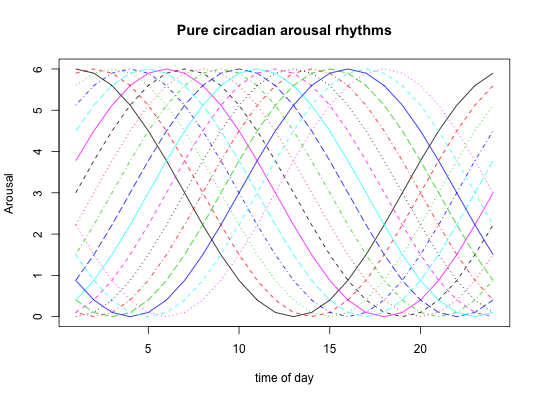
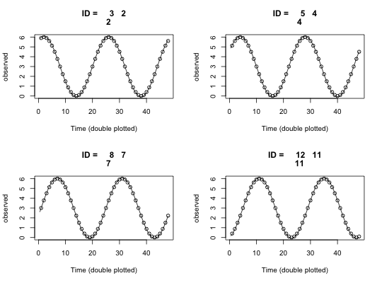
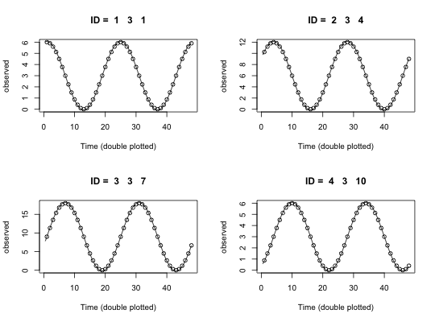
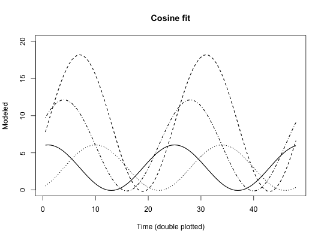
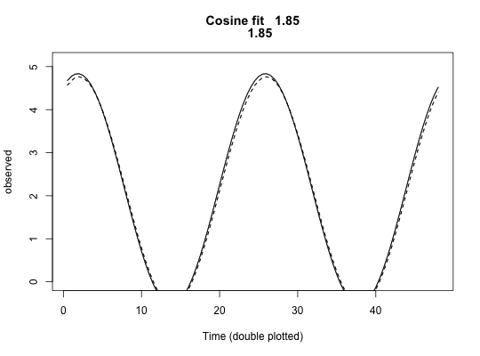

Circadian data are periodic with a phase of 24 hours. These functions find the best fitting phase angle (cosinor), the circular mean, circular correlation with circadian data, and the linear by circular correlation
cosinor(angle,x=NULL,code=NULL,data=NULL,hours=TRUE,period=24, plot=FALSE,opti=FALSE,na.rm=TRUE) cosinor.plot(angle,x=NULL,data = NULL, IDloc=NULL, ID=NULL,hours=TRUE, period=24, na.rm=TRUE,ylim=NULL,ylab="observed",xlab="Time (double plotted)", main="Cosine fit",add=FALSE,multi=FALSE,typ="l",...) cosinor.period(angle,x=NULL,code=NULL,data=NULL,hours=TRUE,period=seq(23,26,1), plot=FALSE,opti=FALSE,na.rm=TRUE) circadian.phase(angle,x=NULL,code=NULL,data=NULL,hours=TRUE,period=24, plot=FALSE,opti=FALSE,na.rm=TRUE) circadian.mean(angle,data=NULL, hours=TRUE,na.rm=TRUE) circadian.sd(angle,data=NULL,hours=TRUE,na.rm=TRUE) circadian.stats(angle,data=NULL,hours=TRUE,na.rm=TRUE) circadian.F(angle,group,data=NULL,hours=TRUE,na.rm=TRUE) circadian.reliability(angle,x=NULL,code=NULL,data = NULL,min=16, oddeven=FALSE, hours=TRUE,period=24,plot=FALSE,opti=FALSE,na.rm=TRUE) circular.mean(angle,na.rm=TRUE) #angles in radians circadian.cor(angle,data=NULL,hours=TRUE,na.rm=TRUE) #angles in radians circular.cor(angle,na.rm=TRUE) #angles in radians circadian.linear.cor(angle,x=NULL,data=NULL,hours=TRUE)
| angle | A data frame or matrix of observed values with the time of day as the first value (unless specified in code) angle can be specified either as hours or as radians) |
|---|---|
| code | A subject identification variable |
| data | A matrix or data frame of data. If specified, then angle and code are variable names (or locations). See examples. |
| group | If doing comparisons by groups, specify the group code |
| min | The minimum number of observations per subject to use when finding split half reliabilities. |
| oddeven | Reliabilities are based upon odd and even items (TRUE) or first vs. last half (FALSE). Default is first and last half. |
| period | Although time of day is assumed to have a 24 hour rhythm, other rhythms may be fit. If calling cosinor.period, a range may be specified. |
| IDloc | Which column number is the ID field |
| ID | What specific subject number should be plotted for one variable |
| plot | if TRUE, then plot the first variable (angle) |
| opti | opti=TRUE: iterative optimization (slow) or opti=FALSE: linear fitting (fast) |
| hours | If TRUE, measures are in 24 hours to the day, otherwise, radians |
| x | A set of external variables to correlate with the phase angles |
| na.rm | Should missing data be removed? |
| ylim | Specify the range of the y axis if the defaults don't work |
| ylab | The label of the yaxis |
| xlab | Labels for the x axis |
| main | the title of the graphic |
| add | If doing multiple (spagetti) plots, set add = TRUE for the second and beyond plots |
| multi | If doing multiple (spagetti) plots, set multi=TRUE for the first and subsequent plots |
| typ | Pass the line type to graphics |
| ... | any other graphic parameters to pass |
When data represent angles (such as the hours of peak alertness or peak tension during the day), we need to apply circular statistics rather than the more normal linear statistics (see Jammalamadaka (2006) for a very clear set of examples of circular statistics). The generalization of the mean to circular data is to convert each angle into a vector, average the x and y coordinates, and convert the result back to an angle. A statistic that represents the compactness of the observations is R which is the (normalized) vector length found by adding all of the observations together. This will achieve a maximum value (1) when all the phase angles are the same and a minimum (0) if the phase angles are distributed uniformly around the clock.
The generalization of Pearson correlation to circular statistics is straight forward and is implemented in cor.circular in the circular package and in circadian.cor here. Just as the Pearson r is a ratio of covariance to the square root of the product of two variances, so is the circular correlation. The circular covariance of two circular vectors is defined as the average product of the sines of the deviations from the circular mean. The variance is thus the average squared sine of the angular deviations from the circular mean. Circular statistics are used for data that vary over a period (e.g., one day) or over directions (e.g., wind direction or bird flight). Jammalamadaka and Lund (2006) give a very good example of the use of circular statistics in calculating wind speed and direction.
The code from CircStats and circular was adapted to allow for analysis of data from various studies of mood over the day. Those two packages do not seem to handle missing data, nor do they take matrix input, but rather emphasize single vectors.
The cosinor function will either iteratively fit cosines of the angle to the observed data (opti=TRUE) or use the circular by linear regression to estimate the best fitting phase angle. If cos.t <- cos(time) and sin.t = sin(time) (expressed in hours), then beta.c and beta.s may be found by regression and the phase is \(sign(beta.c) * acos(beta.c/\sqrt(beta.c^2 + beta.s^2)) * 12/pi\)
Simulations (see examples) suggest that with incomplete times, perhaps the optimization procedure yields slightly better fits with the correct phase than does the linear model, but the differences are very small. In the presence of noisey data, these advantages seem to reverse. The recommendation thus seems to be to use the linear model approach (the default). The fit statistic reported for cosinor is the correlation of the data with the model [ cos(time - acrophase) ].
The circadian.reliability function splits the data for each subject into a first and second half (by default, or into odd and even items) and then finds the best fitting phase for each half. These are then correlated (using circadian.cor) and this correlation is then adjusted for test length using the conventional Spearman-Brown formula. Returned as object in the output are the statistics for the first and second part, as well as an ANOVA to compare the two halves.
circular.mean and circular.cor are just circadian.mean and circadian.cor but with input given in radians rather than hours.
The circadian.linear.cor function will correlate a set of circular variables with a set of linear variables. The first (angle) variables are circular, the second (x) set of variables are linear.
The circadian.F will compare 2 or more groups in terms of their mean position. This is adapted from the equivalent function in the circular pacakge. This is clearly a more powerful test the more each group is compact around its mean (large values of R).
The phase angle that best fits the data (expressed in hours if hours=TRUE).
Value of the correlation of the fit. This is just the correlation of the data with the phase adjusted cosine.
A vector of mean angles
The appropriate circular statistic.
A matrix of circular correlations or linear by circular correlations
R is the vector length (0-1) of the mean vector when finding circadian statistics using circadian.stats
z is the number of observations x R^2. p is the probability of a z.
The reliability of the phase measures. This is the circular correlation between the two halves adjusted using the Spearman-Brown correction.
The split half reliability of the fit statistic.
Do the two halves differ from each other? One would hope not.
The statistics from each half
The individual data from each half.
See circular statistics Jammalamadaka, Sreenivasa and Lund, Ulric (2006),The effect of wind direction on ozone levels: a case study, Environmental and Ecological Statistics, 13, 287-298.
These functions have been adapted from the circular package to allow for ease of use with circadian data, particularly for data sets with missing data and multiple variables of interest.
See the circular and CircStats packages.
time <- seq(1:24) #create a 24 hour time pure <- matrix(time,24,18) colnames(pure) <- paste0("H",1:18) pure <- data.frame(time,cos((pure - col(pure))*pi/12)*3 + 3) #18 different phases but scaled to 0-6 match mood data matplot(pure[-1],type="l",main="Pure circadian arousal rhythms", xlab="time of day",ylab="Arousal")op <- par(mfrow=c(2,2)) cosinor.plot(1,3,pure) cosinor.plot(1,5,pure) cosinor.plot(1,8,pure) cosinor.plot(1,12,pure)p <- cosinor(pure) #find the acrophases (should match the input) #now, test finding the acrophases for different subjects on 3 variables #They should be the first 3, second 3, etc. acrophases of pure pp <- matrix(NA,nrow=6*24,ncol=4) pure <- as.matrix(pure) pp[,1] <- rep(pure[,1],6) pp[1:24,2:4] <- pure[1:24,2:4] pp[25:48,2:4] <- pure[1:24,5:7] *2 #to test different variances pp[49:72,2:4] <- pure[1:24,8:10] *3 pp[73:96,2:4] <- pure[1:24,11:13] pp[97:120,2:4] <- pure[1:24,14:16] pp[121:144,2:4] <- pure[1:24,17:19] pure.df <- data.frame(ID = rep(1:6,each=24),pp) colnames(pure.df) <- c("ID","Time",paste0("V",1:3)) cosinor("Time",3:5,"ID",pure.df)#> V1.phase V2.phase V3.phase V1.fit V2.fit V3.fit V1.amp V2.amp V3.amp V1.sd #> 1 1 2 3 1 1 1 1 1 1 2.166945 #> 2 4 5 6 1 1 1 1 1 1 4.333891 #> 3 7 8 9 1 1 1 1 1 1 6.500836 #> 4 10 11 12 1 1 1 1 1 1 2.166945 #> 5 13 14 15 1 1 1 1 1 1 2.166945 #> 6 16 17 18 1 1 1 1 1 1 2.166945 #> V2.sd V3.sd V1.mean V2.mean V3.mean V1.intercept V2.intercept #> 1 2.166945 2.166945 3 3 3 5.0931085 4.8766297 #> 2 4.333891 4.333891 6 6 6 8.1669454 7.1216935 #> 3 6.500836 6.500836 9 9 9 7.3174598 5.7495820 #> 4 2.166945 2.166945 3 3 3 1.1233703 0.9068915 #> 5 2.166945 2.166945 3 3 3 0.9068915 1.1233703 #> 6 2.166945 2.166945 3 3 3 1.9165273 2.4391533 #> V3.intercept #> 1 4.5322618 #> 2 6.0000000 #> 3 4.4032147 #> 4 0.8330546 #> 5 1.4677382 #> 6 3.0000000op <- par(mfrow=c(2,2)) cosinor.plot(2,3,pure.df,IDloc=1,ID="1") cosinor.plot(2,3,pure.df,IDloc=1,ID="2") cosinor.plot(2,3,pure.df,IDloc=1,ID="3") cosinor.plot(2,3,pure.df,IDloc=1,ID="4")#now, show those in one panel as spagetti plots op <- par(mfrow=c(1,1)) cosinor.plot(2,3,pure.df,IDloc=1,ID="1",multi=TRUE,ylim=c(0,20),ylab="Modeled")cosinor.plot(2,3,pure.df,IDloc=1,ID="2",multi=TRUE,add=TRUE,lty="dotdash")cosinor.plot(2,3,pure.df,IDloc=1,ID="3",multi=TRUE,add=TRUE,lty="dashed")cosinor.plot(2,3,pure.df,IDloc=1,ID="4",multi=TRUE,add=TRUE,lty="dotted")set.seed(42) #what else? noisy <- pure noisy[,2:19]<- noisy[,2:19] + rnorm(24*18,0,.2) n <- cosinor(time,noisy) #add a bit of noise small.pure <- pure[c(8,11,14,17,20,23),] small.noisy <- noisy[c(8,11,14,17,20,23),] small.time <- c(8,11,14,17,20,23) cosinor.plot(1,3,small.pure,multi=TRUE)cosinor.plot(1,3,small.noisy,multi=TRUE,add=TRUE,lty="dashed")# sp <- cosinor(small.pure) # spo <- cosinor(small.pure,opti=TRUE) #iterative fit # sn <- cosinor(small.noisy) #linear # sno <- cosinor(small.noisy,opti=TRUE) #iterative # sum.df <- data.frame(pure=p,noisy = n, small=sp,small.noise = sn, # small.opt=spo,small.noise.opt=sno) # round(sum.df,2) # round(circadian.cor(sum.df[,c(1,3,5,7,9,11)]),2) #compare alternatives # # #now, lets form three "subjects" and show how the grouping variable works # mixed.df <- rbind(small.pure,small.noisy,noisy) # mixed.df <- data.frame(ID=c(rep(1,6),rep(2,6),rep(3,24)), # time=c(rep(c(8,11,14,17,20,23),2),1:24),mixed.df) # group.df <- cosinor(angle="time",x=2:20,code="ID",data=mixed.df) # round(group.df,2) #compare these values to the sp,sn,and n values done separately